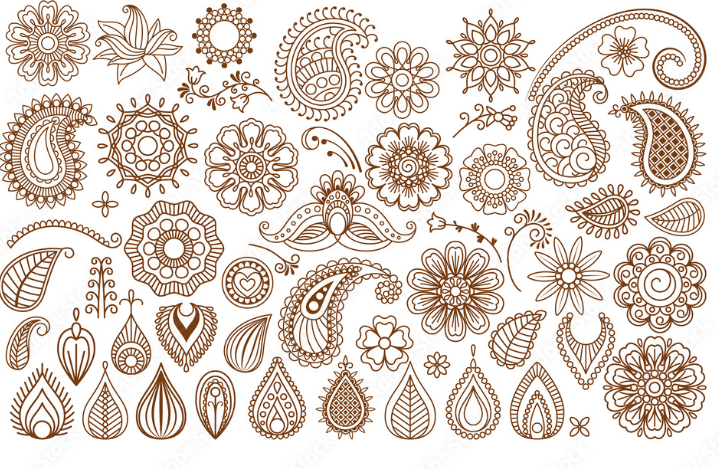

|
|
LEMBAR KERJA PRAKTIKUM (JOBSHEET)MELUKIS TANGAN DENGAN HENNA (HENNA ART) |
|
- Peserta mampu mengidentifikasi jenis, karakteristik, dan bahan pewarna alami henna (Lawsonia inermis).
- Peserta mampu menyusun dan menggambar desain/motif hiasan henna tangan (tradisional, modern, atau arabesque) secara estetis.
- Peserta mampu mempraktikkan teknik pengaplikasian cone henna pada permukaan kulit tangan dengan kerapian dan ketebalan garis yang stabil.
- Peserta mampu menerapkan prosedur keselamatan kerja, sanitasi, serta uji sensitivitas kulit (patch test).
- Peserta memahami teknik perawatan pasca-pengaplikasian (post-care) untuk mengoptimalkan hasil ketahanan warna henna.
Henna, atau yang di Indonesia dikenal sebagai inai atau pacar, adalah pewarna alami yang berasal dari olahan daun tanaman Lawsonia inermis. Bubuk daun ini lazim dipakai sejak ribuan tahun lalu di berbagai belahan dunia (seperti Timur Tengah, India, dan Nusantara) untuk menghias kulit sebagai tato temporer, khususnya pada acara-acara adat dan pernikahan.
Penggunaan henna pada tangan melibatkan teknik melukis motif menggunakan media kantung kerucut (cone). Molekul pewarna alami dalam henna (lawsone) mengikat protein keratin pada lapisan terluar kulit (epidermis), menghasilkan pigmen warna cokelat kemerahan hingga marun yang bertahan selama 1 hingga 2 minggu seiring eksfoliasi sel kulit alami.
Sumber & Jenis Henna:
-
Henna Alami (Natural Henna)
Terbuat murni dari olahan daun Lawsonia inermis yang dicampur dengan cairan asam (air lemon/teh) dan minyak atsiri (essential oil). Menghasilkan warna cokelat kemerahan secara gradual (membutuhkan proses oksidasi 24–48 jam untuk mencapai warna puncak) dan sangat aman bagi kulit. -
Henna Instan / Henna Warna (Instant Henna)
Produk pasta hias siap pakai yang menggunakan tambahan pigmen warna instan (merah, marun, putih, atau hitam). Henna jenis ini tidak meresap ke dalam keratin kulit secara permanen seperti henna alami, melainkan melapisi permukaan kulit dan memberikan warna tajam secara instan tanpa masa tunggu oksidasi.
| BAHAN (MATERIALS) | ALAT (TOOLS) |
|---|---|
|
|

Gambar 1.1: Pembuatan Sketsa Awal
Gambar 1.2: Pengolesan Pasta Henna
| No. | Tahapan Kerja | Deskripsi & Instruksi Pengerjaan |
|---|---|---|
| 1 | Persiapan Kulit & Area Kerja | Bersihkan area tangan model dari minyak, lotion, dan kotoran menggunakan kapas yang diberi alkohol 70%. Uji sensitivitas (patch test). |
| 2 | Perancangan Motif & Sketsa | Tentukan motif (Arabesque, Indian, Floral, atau Modern). Buat garis panduan/sketsa tipis pada kulit menggunakan pensil alis bila diperlukan. |
| 3 | Pengondisian Cone Henna | Potong bagian ujung kerucut (cone) henna dengan gunting kecil. Pastikan ukuran lubang menghasilkan ketebalan garis yang pas. |
| 4 | Aplikasi Elemen Utama | Pegang cone dengan posisi nyaman. Aplikasikan motif utama (fokal/tengah) pada punggung tangan dengan tekanan yang stabil. |
| 5 | Pembuatan Detail & Isian | Lanjutkan dengan menggambar garis sambungan, ukiran jari-jari, rincian kelopak, serta isian (shading/vines) secara rapi. |
| 6 | Pengeringan & Penjagaan Pasta | Biarkan henna mengering secara alami (15–30 menit). Untuk henna alami, oleskan cairan lemon-gula agar pasta tidak gampang rontok. |
| 7 | Pembersihan Pasta Dried Henna | Kikis/kelupas pasta henna yang mengering perlahan tanpa menggunakan air (khusus henna alami, hindari air selama 6–8 jam). |
| 8 | Finishing & Post-Care | Usapkan henna oil atau minyak zaitun untuk melindungi pigmen dan melembapkan kulit. Bersihkan area sekitar dari sisa pasta. |
Hasil Akhir Praktikum:
- Hasil lukisan henna tangan (Henna Art) yang teraplikasi dengan rapi, proporsional, dan estetis sesuai dengan rencana motif.
- Dokumentasi/foto proses dan hasil akhir karya lukis henna sebagai portofolio praktikum.
- Konsistensi ketebalan garis dan kerapian kontrol cone henna.
- Keseimbangan, simetri, dan estetika komposisi motif pada kulit tangan.
- Kebersihan hasil aplikasi (bebas dari noda/blobs yang tidak disengaja) serta kepatuhan prosedur post-care.
| No | Aspek Penilaian | Skor Max | Skor Siswa | Catatan / Masukan Instruktur |
|---|---|---|---|---|
| 1 | Persiapan Kulit, Alat & Higienitas Kerja | 15 | ||
| 2 | Teknik Pengontrolan Cone & Kerapian Garis | 35 | ||
| 3 | Kreativitas Motif, Komposisi & Estetika | 35 | ||
| 4 | Keselamatan Kerja & Kebersihan Area Praktikum | 15 | ||
| TOTAL SKOR | 100 | |||
|
Pengajar / Instruktur, ( _______________________ ) |
Siswa / Peserta Praktikum, ( _______________________ ) |